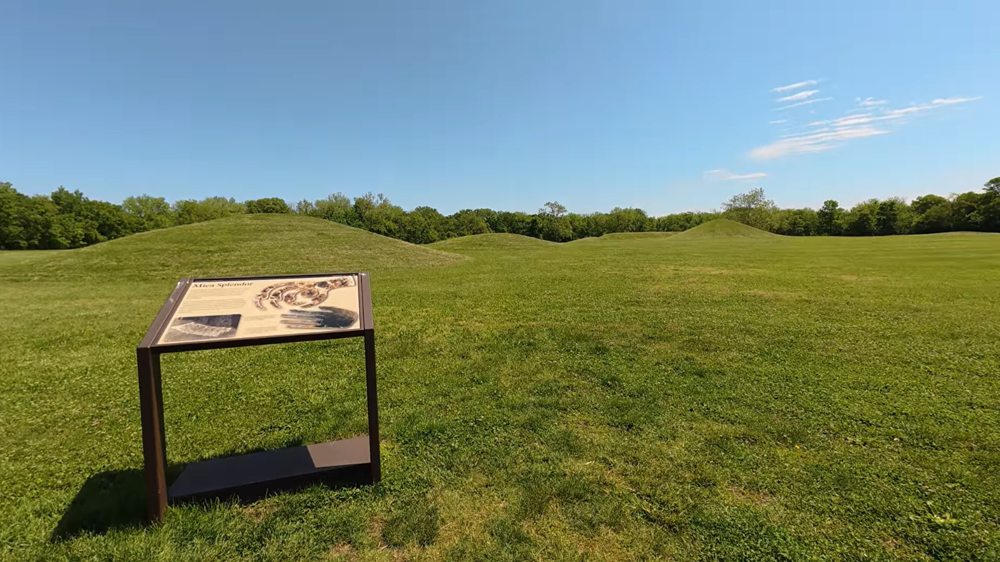

Hopewell Culture National Historical Park
One of Ohio's most remarkable historic landscapes, preserving the legacy of the Hopewell people.

Our Visit
We stopped at Hopewell Culture National Historical Park while exploring southern Ohio.
The wide open earthworks, peaceful walking paths, and quiet setting made it easy to slow down and appreciate the history surrounding us.
It is another reminder that some of Ohio's most interesting places aren't found in busy cities— they're tucked away where you're willing to explore.
A Little History
Hopewell Culture National Historical Park preserves monumental earthworks built nearly 2,000 years ago by the Hopewell culture.
These geometric earthworks served ceremonial and cultural purposes and remain among the most impressive examples of prehistoric engineering in North America.
Today the park helps preserve and interpret this remarkable chapter of Ohio's ancient history.
Come Along With Us
Watch the Hopewell Culture National Historical Park.
▶ Watch on YouTubeNearby Discoveries
Hopewell Culture National Historical Park pairs well with many of our other southern Ohio adventures, including historic sites, scenic drives, and quiet backroad discoveries.
As GO-CA-TION continues to grow, this page will connect with more nearby destinations.